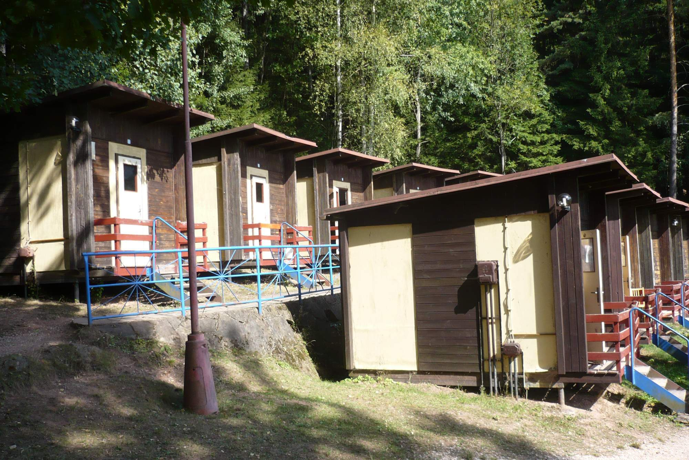
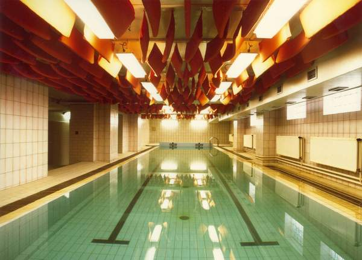
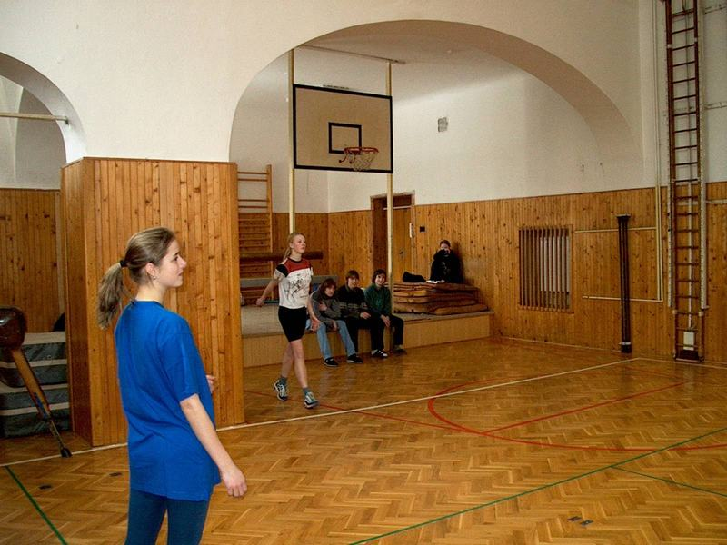
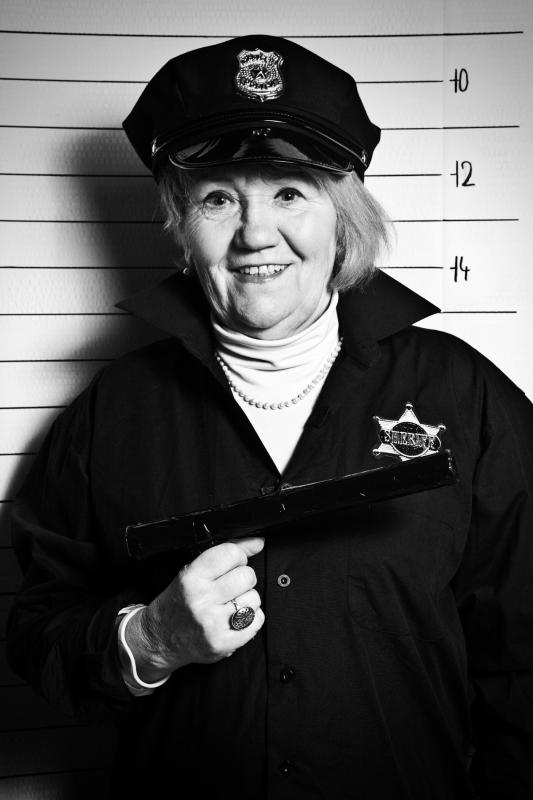
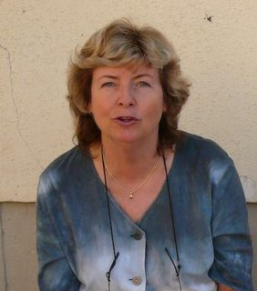

Sbohem a šáteček

Hlavním důvodem bylo, že jsem utekl ze základky, kde se mi v té době vůbec nelíbilo (kvůli spolužákům). Druhým byl slíbený počítač. Pro mladého hráče snad nemůže být lepší motivace :). A třetím, v té době úplně zanedbávaným, dnes velmi podstatným důvodem byla vzdálenost - pět minut svižnější chůzí. A tak jsem se na zkoušky snad dva měsíce poctivě připravoval. Dělal jsem SCIO testy (ty se používaly pro přijímačky), počítal příklady a podobně. Dokonce jsem některé testy přinesl na popud třídní do školy, aby si je mohli spolužáci vyzkoušet také. Museli mě tehdy asi hodně milovat.
Přes všechnu přípravu jsem šel na přijímací testy ohromě nervní. (Tohle prokletí mám bohužel dodnes.) Usadili mě do první lavice v pravé řadě, za mnou seděla spolužačka ze základky. S tou se ihned dala do řeči moje mamka. Bohužel si nepamatuji, o čem přesně mluvily. Živě si ale vybavuji, jak jsem celý zrudl. Takže asi tak…. Samotný test si přiliš nevybavuji. Jen, že u prvních pár otázek jsem musel výsledky zaškrtávat obouruč, abych se vůbec trefil do čtverečků. Až tak jsem z toho byl v háji. Pak jsem se ale uklidnil, vše dopsal a spokojeně odešel domů.
Na výsledky se čekalo snad čtrnáct dní. Navíc v den, kdy měly být zveřejněny nefungoval školní web. Tehdy jsme se s rodiči dost divili. (Dnes bych vám celkem s jistotou ukázal na člověka, který za to pravděpodobně mohl.) Nezbylo nám tak nic jiného, než si dojít pro výsledky do školy. Po chvilkovém hledání kódu, pod kterým se skrývá můj výsledek (Jak já, tak taťka jsme nepovažovali za důležité si informace podobného rázu udržovat v paměti déle jak pět minut) jsme zjistili, že mě s rezervou přijali. Dokonce jsem byl mezi prvními. Celou zpáteční cestu jsem s úsměvem od ucha k uchu vesele proskákal. Doslova.
A tak jsem si mohl s hrdostí začít řikat gymplák (byť jsem jím fakticky ještě nebyl). Před záříovým nástupem jsem ještě navštěvoval týdenní kurz angličtiny. Nemůžu říct, že by mi něco dal. Spíš jsem zjistil, že nic neumím. A to jako vůbec! To byla celkem rána, protože na základce jsem platil za jednoho z nejlepších. Na druhou stranu, ostatní také nevypadali, že by na tom byli o mnoho líp.
První třída byl trochu porod. Nejenom, že si člověk musel zvykat na nový systém, více učení, ale hlavně nové lidi. A pro mě, introverta, to byl asi ten hlavní problém. Dal jsem to dohromady s Kubou - jediným spolužákem, který se (asi z 5 hlásících se) na gympl dostal. Paradoxní bylo, že do té doby jsme spolu ani nepromluvili. Ale gympl z nás udělal velmi dobré přátele. Abych ale nevypadal jako úplný asociál - hned na seznamováku jsem se dal dohromady s Matějem a Martinem. Tahle parta, obohacená ještě o Davida vydržela až do konce.
 Na těchto chatkách jsme trávili seznamovací týden.
Ve druháku jsme vymeňovali učitele matematiky. S paní S. celá třída nevycházela. Zahnaná do kouta dotazy na látku nechápajícími studenty na nás křičela. Za to jsme se jí odměňovali po svém - mazali tabule jarem (nešlo na ně pak psát), namáčeli křídy, schovávali houbu a jednou (a to bych si nerad vymýšlel) jí snad někdo dal na židli připínáček. To samozřemě vyvolávalo další křik a odpor z její strany. Skončilo to až nahrazením za pana Hanuše.
Následující roky se nesly ve znamení ulejvání, kecání a boji s matematikou, Sedával jsem tehdá v zadních lavicích s Davidem. Razili jsme teorii, že čím dál od učitele tím lépe. Nezajímavé hodiny (kterých samozřejmě byla většina) jsme trávili kecáním, hraním piškvorek a kreslením do učebnic. Bylo jasné, že pokud se máme začít učit, musíme od sebe. To bylo jasné i učitelům a tak nás rádi rozsazovali. Dopadlo to tak, že jsme spolu seděli asi na jedné hodině. Proto jsem si další rok přesednul (dost jsem to střídal, až jsem zakotvil opět u Kuby) a vše šlo rázem lépe.
Další změnou byl přechod na velký gympl. Alespoň nás tím strašili - že bude víc učení, horší známkování atd. Nemyslím si, že by tomu tak bylo. Ale možná jsem si jen zvyknul. Zpětně šlo o nejlepší roky života - obzvláště poslední dva roky. Člověk byl (téměř, posléze plně) plnoletý, měl řidičák, škola šla sama a byla spousta volného času. Následovala tvrdá rána - Maturita - ale o tom někdy jindy.
Osobně považuji roky na gymplu za ty nejlepší. Měl jsem neuvěřitelné štěstí na spolužáky i kantory a jen těžko se mi bude odcházet. Rozhodně ale budu vzpomínat .. a v dobrém.
Jak to na gymplu vypadá⌗
Gympl má své probémy - osobně si myslím že jde hlavně o neangažované vedení. Například základka v Lánově, kde se ředitelka viditelně snaží, využívá různých fondů a školu zvelebuje se na gymplu nic podobného neděje. S nadsázkou můžu říct, že jedinou změnou za osm let je přidání hodin do každé třídy. Odpovědí na všechny nápady bylo: “Škola nemá finance”. A tak nebyly ani zájezdy do zahraničí, ani vícedenní třídní výlety. A exkurzí bylo pomálu.
Učebny vzhledem bohužel také neosloví, ač se učitelé snaží sebevíc, pěkné nástěnky to nezachrání. Zastaralé vybavení - meotary, CRT televizory, mapy, pomůcky. Prostě se šetří a pokud daná věc funguje, není důvod ji měnit. Nejhorší jsou šatny - malé kovové (často rezaté, počmárané, polepené, zohýbané) skřínky, zašedlé a špinavé stěny a do nedávna viditelné trubky na stropě. Vypadalo to spíše jako v kotelně než v šatně.
Ty internety⌗
Popravdě, s technikou to na škole není tak špatné. Téměř každá třída má promítačku a počítač na obsluhu (pro učitele). Nově je (opět téměř) po celé škole rozvedena WiFi síť a díky dotacím přibyla ke dvoum již existujícím zcela rekonstruovaná třída vybavená notebooky. Smutné ale je, že většina učitelstva neumí s počítači pracovat, natož aby je nějak smysluplně využila při výuce. Mnohdy tak do těchto učeben chodí jen z nutnosti (není volná jiná třída) a notebooky/počítače se nevyužijí. Příkladem může být e-learningový systém Moodle, kam učitelé mohou zapisovat úkoly, vkládat dodatečné materiály a dokonce vytvářet testy. Kolik učitelů jej aktivně využívá? Tři!
Není se tak čemu divit, že výuka práce s počítačem - zkratka IVT - je také bídné úrovni. V podstatě se projde psaní všemi deseti (několik lekcí, než se zjistí, že to žáky nebaví), Excel (jak spočítat A1 * A2 a vše vložit do A3), Word (třeba jak vložit obsah). Vrcholem je tvorba Hello world v TurboPascalu viz maturita.
Sportovní vyžití⌗
Co by možná člověk ve škole nečekal je vlastní bazén. Ten možná bude zmiňován jako jeden z taháků školy. Nenechte se ale ošálit. Bazén je ve stavu, kdy se žáci raději napíší marod, nebo od doktora seženou potvrzení o vyrážce/alergii, aby nemuseli plavat. Ve sprchách je na stropu plíseň a všechno vybavení vypadá jak z dob K. Gottwalda. To je ale rys celé školy. O bazénu se toho na škole také hodně traduje. Od krys, které si přes léto (kdy je bazén nepoužívaný) užívají chladivých koupelí, až po paní S. koupající se v něm v rouše Evině. Abych ale jen nekritizoval, proslýchá se o rekonstrukci. Zda jde o planné řeči, nebo o skutečný záměr ukáže až čas.
 Školní bazné v celé své kráse. Na levé straně (mimo snímek) jsou ony sprchy
Tělocvična byla očividně stavěna v době, kdy se nedělalo nic jiného než gymnastika. Na jedné straně má do prosturu zasahující výklenek na duchny a “kozy”. Ten dělá tělocvičnu asymetrickou a tudíž nevhodnou pro hraní jakýchkoli sportů. To nicméně nezabránilo v pověšení basketballových košů. Osobně, jako tělesnou aktivitu nevyhledávajícího člověka, mám nejhorší vzpomínky na hrazdu. Ta vešla ve známost jako kulodrtič, neb žákům, kteří nebyli sto udělat výmyk, bylo pomoženo. Ze strany učitele nešlo rozhodně o úmysl, ale my jsme byli trdla a vždycky se v té rychlosti praštili.
 Nalevo je vidět kousek výklenku, který krásně zúží celou tělocvičnu a utopí koš na basket.
Aikido je mistnůstka v podzemní části gymplu. Skrývá v sobě malou posilovnu a nově také lezeckou stěnu. Právě na příkladu stěny je vidět, že když se chce, peníze jsou - šlo totiž o projekt jednoho z učitelů tělocviku.
 Boulderová stěna v celé své kráse se svým stvořitelem (sedící pán). V zadu jsou dveře do posilovny.
Boulderová stěna v celé své kráse se svým stvořitelem (sedící pán). V zadu jsou dveře do posilovny.
Venkovní sportovní areál zahrnuje dvě hřiště na volejbal, basket, skok do dálky, trasu na sprint, hod do dálky a hřiště na fotbal (rozměry spíše na házenou). Právě na posledním jmenovaném jsme jako třída (tedy naše klučičí část - tělocvik je rozdělen na dvě skupiny podle pohlaví) trávili nejvíce času. Poslední dva roky jsme k našemu nadšení prakticky nedělali nic jiného. Nebyl bych to já, kdybych si nerýpnul. Hlavní probém je povrch - hrubozrnný asfalt - při sebemenším pádu to znamená v nejlepším případě sedřenou kůži. Navíc se na nerovném povrchu tvoří kaluže a fotbal po deštivých nocích končil promočenými botami. Někteří střelci si je nechávali ve skřínkách a takový puch, který se linul druhý den po šatnách bych vám nepřál zažít. A konečně třetím problémem je dvojce kanálů na hrací ploše. Po dešti jsou enormě kluzké… a jak už jsem říkal, všude kolem asfalt.
Je na škole něco dobrého?⌗
Když to po sobě čtu, zdá se, jako by škola neměla co nabídnout a nic na ní nefungovalo. Pokud se budete dívat jen po tom, jak škola vypadá a jaké má pomůcky, může to tak vypadat. Vše to ale mění lidé, kteří na ní učí. Věřím že by se mnou všichni moji spolužáci nesouhlasili, ale já si za svým názorem stojím. Stejně jako kdekoliv jinde i zde můžete narazit na debila. Ale většina učitelů je velice pohodová, milá a vstřícná. Nebudu se vyjadřovat ke všem učitelům, snad jen k těm, kteří mi nejvíce přirostli k srdci.
Pan Klika - učitel fyziky, matematiky. Podle mě největší pohodář školy. Několikrát do roka zapomene, že má zrovna hodinu a vůbec nepřijde. O to hůř, když má suplování. Na druhou stranu jeho hodiny patří mezi ty, o něž nechcete přijít a tak jsme ho vždy naháněli. Má neuvěřitelný dar zjednodušit věci až na holou podstatu a vysvětlit i složitá témata tak, že je pochopí i dítě. Látku podává barvitě, doplňuje ji o náčrtky, ukazuje videa, obrázky atd. Jako správný učitel si je schopný sjednat pořádek - pamatuji si, že v první třídě jsem za ústavičné kecání musel do kouta. Většinou však stačí jedno okřiknutí a třída mlčí. Za rok píše tak čtyři testy (plus případné opravky) a opraví je ihned ve škole. Nemusí si nic tahat domů a má klid. A to nejlepší přijde, když nahodí oblek, protože v něm vypadá jak Bond.
Pan Hanuš - učitel matematiky, fyziky. Jeho největší nevýhodou je, že nemá autoritu. V hodinách často musel překřikovat žvanící žáky, zvyšovat hlas atd. Díky tomu se o něm dlouhou dobu říkalo, že není schopen naučit. To je ale lež, kterou rozšiřují ti, které musí překřikovat. Hanuš má nastavené vlastní známkování, ve kterém má žák stejnou šanci na získání každé známky (normálně je na jedničku jen 1 - 1.59, kdežto na dvojku 1.5 - 2.49 -> dvojnásobný rozsah). Navíc dává možnost získat jedničky za domácí úkoly. Kdo dává při hodinách pozor a dělá úkoly nemůže mít hůř jak za tři. Zpětně ho lituji, za to jak se k němu všichni chovali (občas včetně mě), protože až časem člověku dojde, jak hodný, férový a snaživý učitel to je. Obzvlášť na hodinách fyzikálního kroužku/semináře je vidět, jak ho učení baví, když ho žáci poslouchají a zajímají se o látku.
Pan Rychtr - učitel matematiky a tělocviku. Na začátku působil autoritativně a přísně. Patří mezi ty lidi, u kterých není možné poznat, co se jim právě honí hlavou. Hodiny tělocviku byly i přes jeho přísné vzezření velice pohodové a postupně se zvrhávali v hraní fotbalu. I z původně nastavených norem se postupně upouštělo. Před tím ale stihl splnit svůj slib, který mi dal na začátku: “To rozběháme” říkal, když jsem nebyl sto dokončit abecedu. Abych to vysvětlil, když jsem přišel na gympl, byl jsem asi nejtlustší z celé třídy.
Paní Vajová - učitelka hudebky a dějepisu. Děják s paní Vajovou, to nebyla hodina, to bylo vyprávění pohádky. Do dveří vešla vkusně ustrojená starší paní, napůl se posadila se na první lavici a spustila. Během celé hodiny by bylo slyšet spadnout na zem špendlík, jak všichni seděli ani nedutali a sledovali barvitý výklad. Ne nadarmo se traduje, že to vše paní zažila, protože jinak by to tak popsat nesvedla. Bohužel asi bude tento rok opravdu (již to slibovala několikrát) končit a nové generace ji už nepotkají.  Paní Vajová
Paní Vaňková - učitelka angličtiny a občanky. Velice laskavá a milá paní, která mě naučila anglicky. Hodiny na vyšším gymnáziu s jinou učitelkou mi daly širší slovní zásobu a možnost víc mluvit. Ale stále jsem stavěl na základech, které jsem získal od p. Vaňkové. Stejně jako p. Vajová i ona školu už několik let nazpět opustila.
 Paní Vaňková
Paní Rogoňová - učitelka biologie. Mladá paní, kterou jsme měli jen asi dva roky, než odešla na mateřskou. I to stačilo, aby se stala velice oblíbenou. Látku podávala zábavně (takže bavila i mě, člověka, který nyní biologii nesnáší), dlouho a barvitě vyprávěla, vše měla uspořádané a seřazené. Po ní jsme dostali dvě další učitelky, ale žádná se jí už nevyrovnala.
Zmínit by si zasloužili i další, protože pohodářů a dobrých učitelů je na škole dost. Ty ale potkáte jen když se přihlásíte ke studiu!